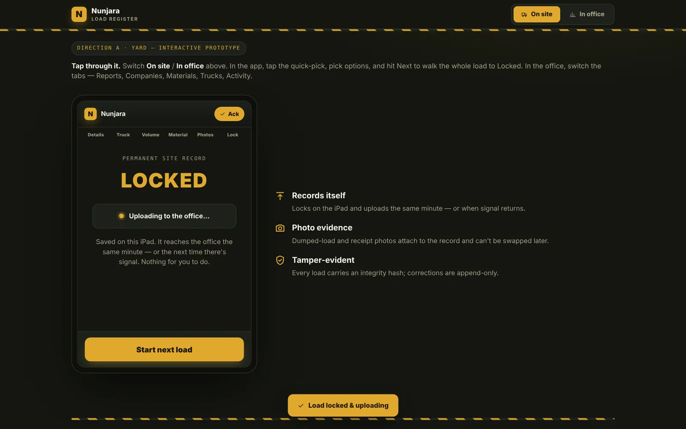
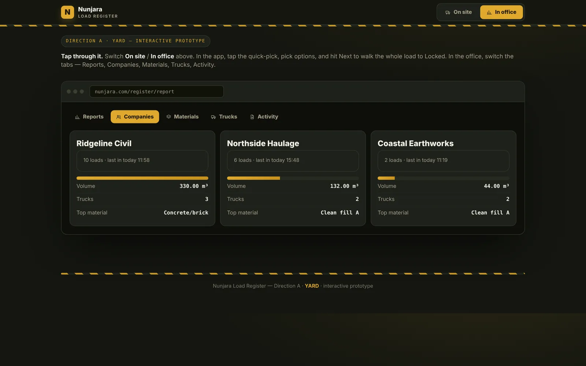
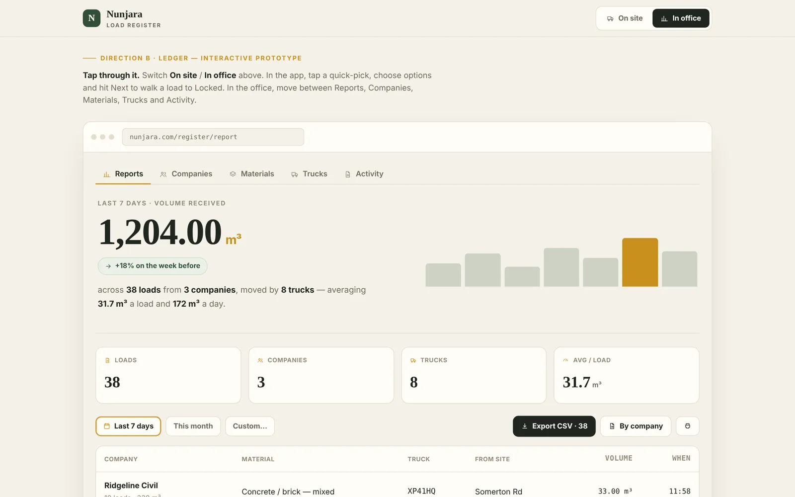
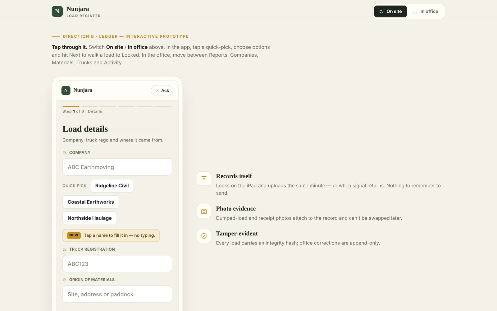
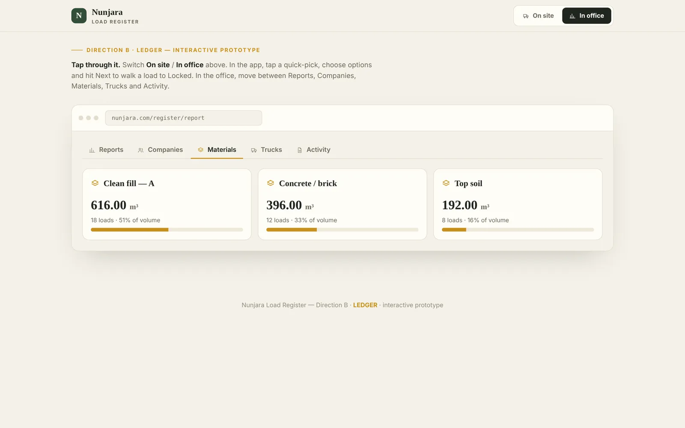
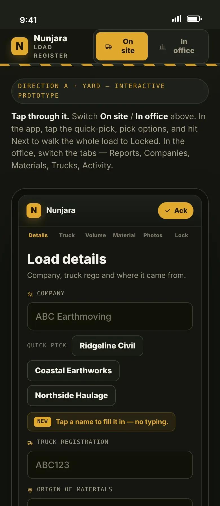
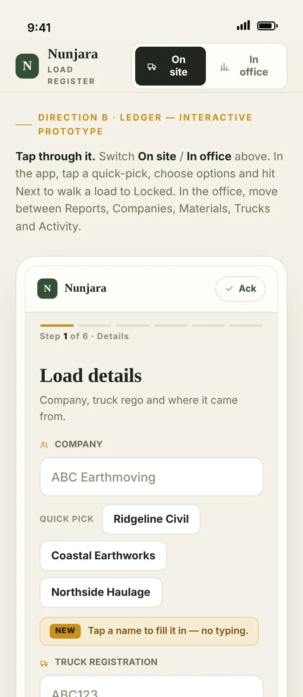
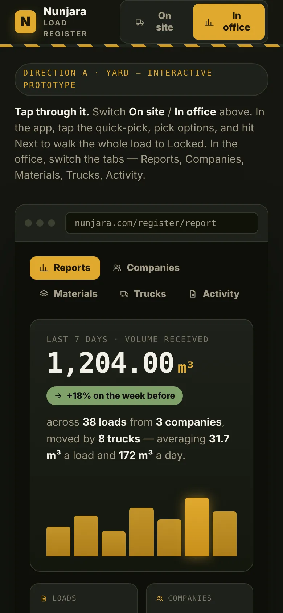
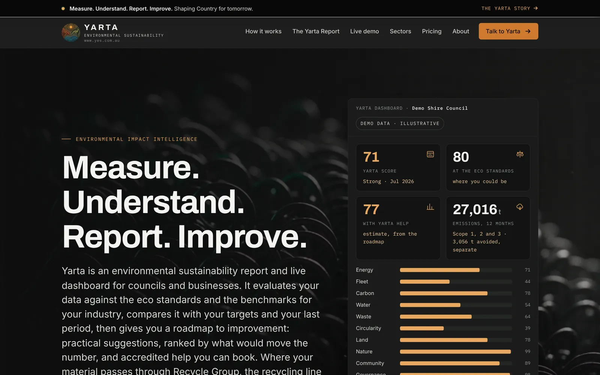

01
Six steps, big buttons
Details, truck, volume, material, photos, lock. Regular customers are a quick-pick, and every choice is a large tap target.

An iPad app for logging every load tipped at a soil recycling site, and the office dashboard that reports on it, designed in two directions.

Nunjara recycles soil, fill and rubble. Every load through the gate needs a record: which company, which truck, how much, what material, with photos, done between trucks.
A gate record that takes seconds, can’t be quietly changed later, and reaches the office ready to report on without re-typing.
Details, truck, volume, material, photos, lock. Regular customers are a quick-pick, and every choice is a large tap target.
The record locks on the iPad and uploads the same minute, or as soon as signal comes back. There is nothing for the operator to remember.

Photo evidence attaches to each load, every record carries an integrity check, and office corrections are added on top rather than overwriting.

Reports by company, material and truck, an activity feed, and one-click CSV and PDF exports for accounts.







Two interactive prototypes, Yard (dark, high contrast for outdoors) and Ledger (light, editorial), for the client to tap through and choose from. Shown with sample data.
Interactive HTML prototypes, ready to build as an offline-first iPad web app.
Prototype, shown with sample data.

Tell us what’s slowing your business down. We’ll audit your website and ads for free and show you what we’d build instead of another subscription.
Get a free audit